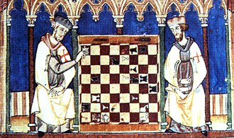
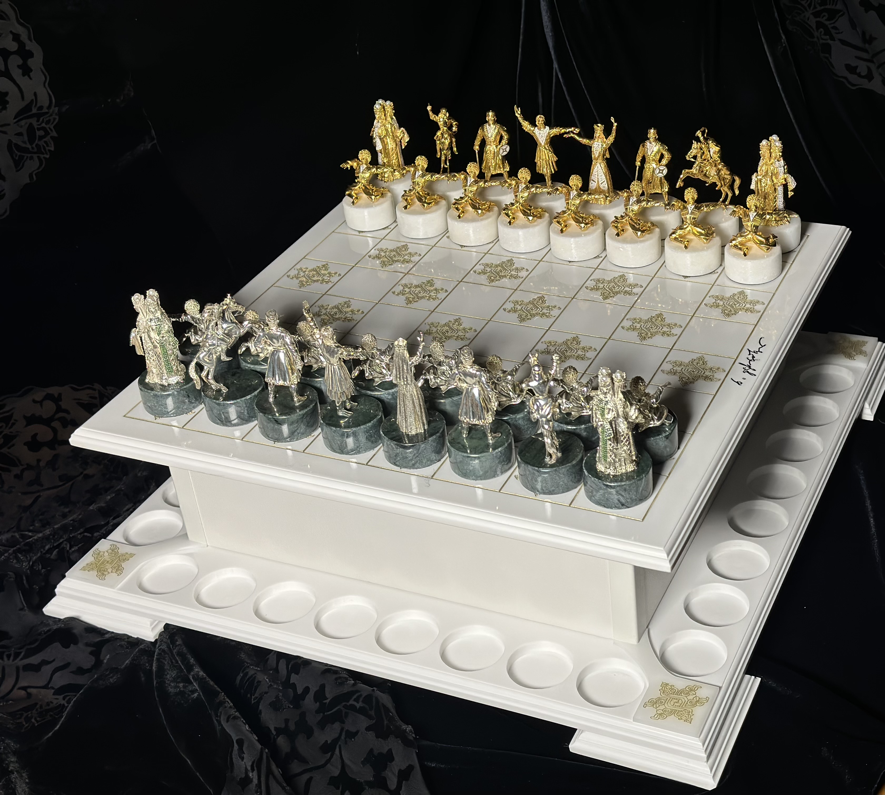

ჭადრაკი ყველასთვის
- CFE
"ყველა დიდოსტატი ერთდროს დამწყები იყო"
ირვინგ ჩერნევი
ჭადრაკის ისტორია (History of Chess)
ჭადრაკი ინდოეთში VI საუკუნეში გამოიგონეს. მისი შექმნის შესახებ მრავალი ლეგენდა არსებობს.
ლეგენდის მიხედვით, გამომგონებელმა ჯილდოდ მოითხოვა ხორბლის მარცვლები, რომლებიც ყოველ უჯრაზე ორმაგდებოდა.

რატომ ჩვენ?
შემოგვიერთდით ჭადრაკის სამყაროში და განვითარდით ჩვენთან ერთად.
